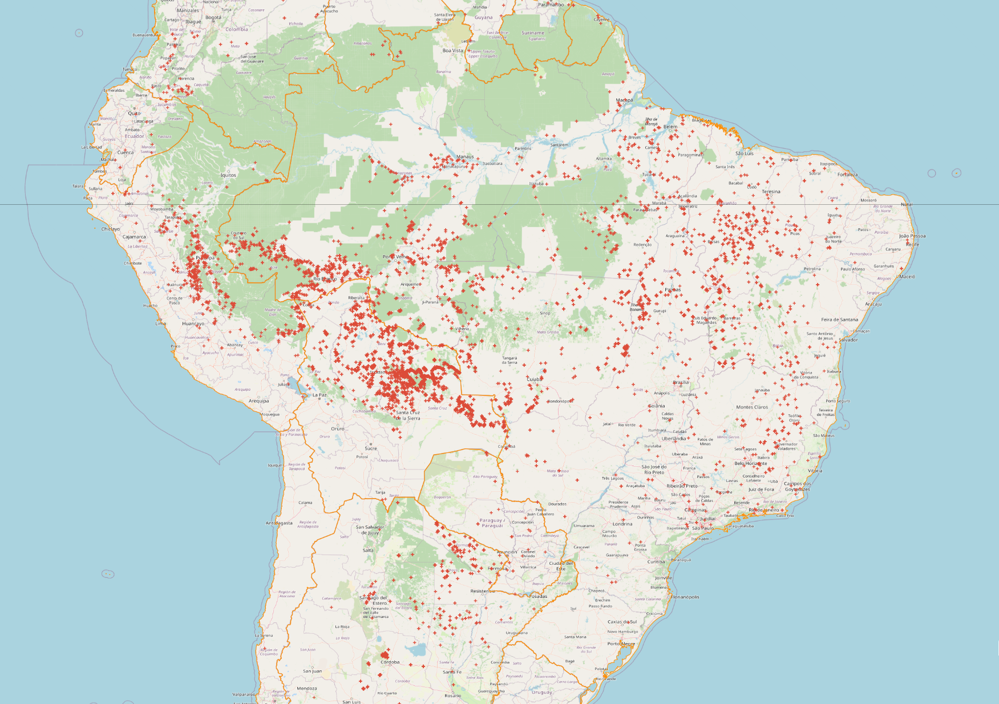

Prevenção
-
Medidas Preventivas: Educação ambiental nas escolas e comunidades.
-
Implementação de técnicas agrícolas sustentáveis.
-
Fortalecimento da fiscalização em áreas de risco
-
Criação de aceiros (faixas sem vegetação) em propriedades rurais.
-
Monitoramento por satélite para detecção precoce de focos de incêndio.
-
Recursos de Combate: Em caso de queimadas, ligue imediatamente para o Corpo de Bombeiros (193).
-
Denuncie queimadas ilegais ao IBAMA através do telefone 0800 61 8080.
-
Apoie e participe de brigadas voluntárias de combate a incêndios em sua região.
Monitoramento
